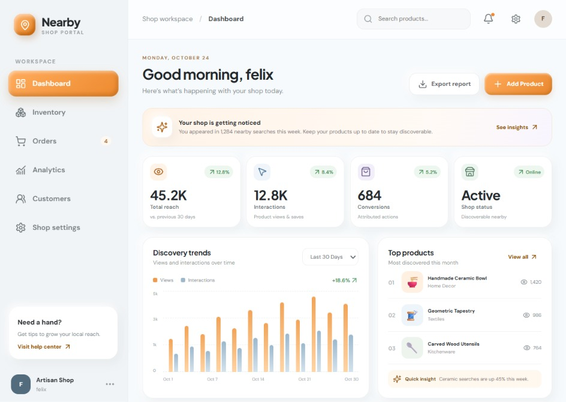
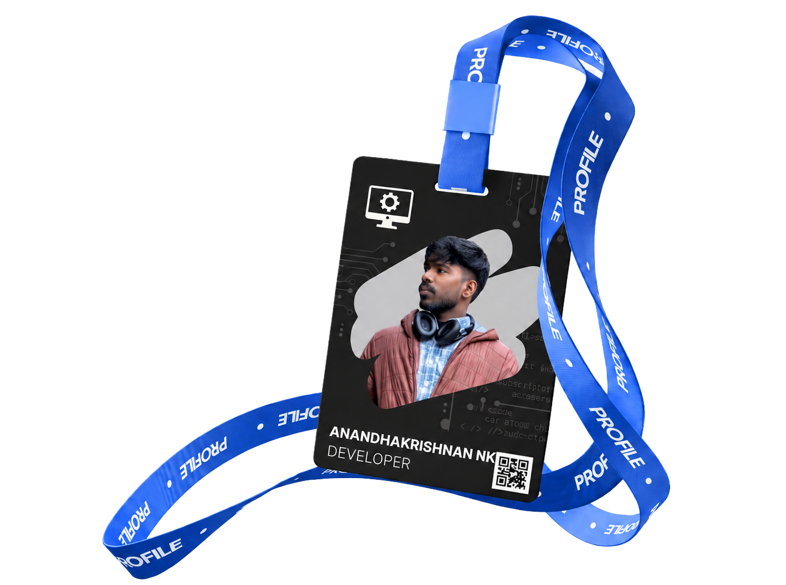

PROJECT CONCEPT / 01
NearBy AI
A concept for discovering relevant local shops and offers through proximity and recommendation ideas.
Explore concept ↗... B.Tech · Computer Science & Engineering ...
Hello! I’m Anandhakrishnan NK, a Computer Science and Engineering student at the College of Engineering, Cherthala. I enjoy programming and am interested in full-stack web development, Python, AI/ML, Cloud, and DevOps. I like turning ideas into practical applications that solve everyday problems. I’m learning by building through coursework, project ideas, and independent practice.
B.Tech · College of Engineering, Cherthala · APJ Abdul Kalam Technological University (KTU) · 2019 schemeHTML5 / CSS3 / JavaScript / React / responsive design / component-based UI fundamentals
C / C++ / Python / Java / JavaScript / PHP
NumPy / Pandas / missing data / encoding / EDA / introductory ML
Linux / Shell / Git & GitHub / Networking / SSH
SQL / database fundamentals / Google Sheets / Tableau
Topics I’ve studied and tools I’m practicing.

Outside academics: music, story-driven games, boss fights, racing, and beginner crochet.
Experience in mobile application development and graphic web design.
Academic coursework, self-study, and hands-on practice I’m building on.
Academic coursework and independent practice.
Workshops, courses, an internship, and participation entries from the records you shared.
Red Team Leaders · AI Security · Cybersecurity
BharatCares · IBM SkillsBuild · AICTE · Big Data · Data Analysis
IBM · Data Analysis · Big Data
IBM · Data Analysis · Data Entry
College of Engineering, Cherthala · IEEE SBCECTL with IHRD Tharang · Competitive programming · Problem solving
Pupilfirst · Environmental awareness · Community volunteering
IEDC CEC · College of Engineering, Cherthala · SQL · Python
College of Engineering, Cherthala · in collaboration with SPACS
IEEE SB CEC TL · Communication · Teamwork
Project concepts, academic practice, and the first interface screens you’ve shared. Labels identify concepts and screenshots clearly.
An idea to connect customers with nearby businesses and relevant offers. Proposed features include proximity-based discovery, NLP-inspired matching of interests to inventory, and ranking by relevance and distance. “Invisible Mode” explores user control over visibility. The dashboard is shown as a project interface; proposed features remain concept features.
Team: Anandhakrishnan NK · Harikrishnan · Christiano Joshy Thomas · SuryakiranChef Vyami helps users decide what to cook with ingredients they already have. Add items to “Ingredients on hand,” then tap “Get a recipe.” The app uses an AI API to show dishes that can be made from those ingredients and provides a recipe for each. The screenshot shows the ingredient-entry step of this flow.
The screenshots show file cards with keep and discard choices. The project brief also describes previews for supported files and a review queue before deletion. Flutter, Dart, Provider, and Android SAF are the selected technology direction.
Self-study notebooks cover data reading and manipulation, missing values, categorical encoding, EDA, Matplotlib and Seaborn visualizations, SQLite, and logging. The broader Python track includes list and dictionary comprehensions, Flask basics, exception handling, multithreading and multiprocessing, and introductory machine learning. NPTEL course participation is part of this learning path; no certificate claim is made.
Lexical analysis · token recognition · intermediate code · constant propagation · basic 8086 code generation
TCP / UDP socket exercises · Stop-and-Wait · Go-Back-N · Leaky Bucket · timeout and acknowledgement handling
Arrays · strings · functions · file handling · basic data structures · problem-solving in C, C++, and Python
The seminar topic I took was federated learning in healthcare, focused on breast cancer research.
My seminar explored how machine-learning models can be trained across distributed data sources while reducing the need to centralize raw healthcare data, along with privacy challenges and the approaches described in the selected research papers.